Clase 5: Instituciones generizadas y nivel macro
SOL191 · Instituto de Sociología · PUC
Además de ser un conjunto de ideas y algo que uno “hace”, el género también es un principio organizador que permea nuestras instituciones sociales.
Las creencias e ideas de género que afectan nuestros ambientes ejercen una influencia en nuestras vidas independiente de nuestras propias creencias, personalidades, e interacciones.
El género permea en las normas (creencias y prácticas conocidas y seguidas ampliamente) y políticas (expectativas y reglas explícitas y codificadas) institucionales.
Donde el género se usa como principio organizador, por ejemplo, mediante la canalización de hombres y mujeres en diferentes espacios o actividades, que son valorados de manera diferente.
Qué tan saliente es el género —su relevancia— varía a través de las diferentes partes, espacios y actividades de la institución.
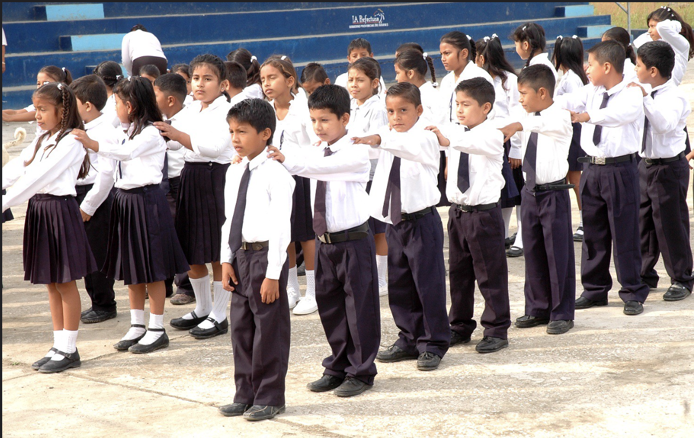
(Crocco-Valdivia y Galaz-Valderrama 2023)
“El trabajo de cuidados de las académicas —tradicionalmente circunscrito al ámbito privado— se replica en la universidad […] principalmente a partir de su inserción predominante en labores de gestión universitaria” (p. 439)
“The concept of a universal worker excludes and marginalizes women who cannot, almost by definition, achieve the qualities of a real worker because to do so is to become a man” (150)
Reflexión corta (1 párrafo): ¿Siguen siendo generizadas las organizaciones que operan bajo estas nuevas lógicas? ¿De qué manera?
Responder refiriendo a Mickey 2019.
Argumento central: La colisión entre la lógica flexible y la burocrática la que produce una nueva desigualdad
En grupos de 2-3 personas:
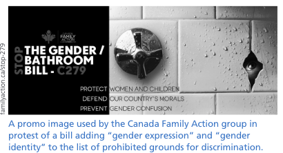
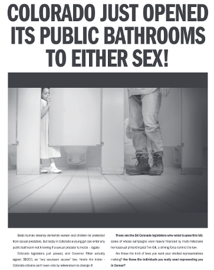
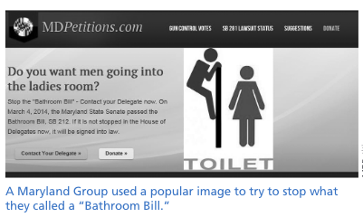
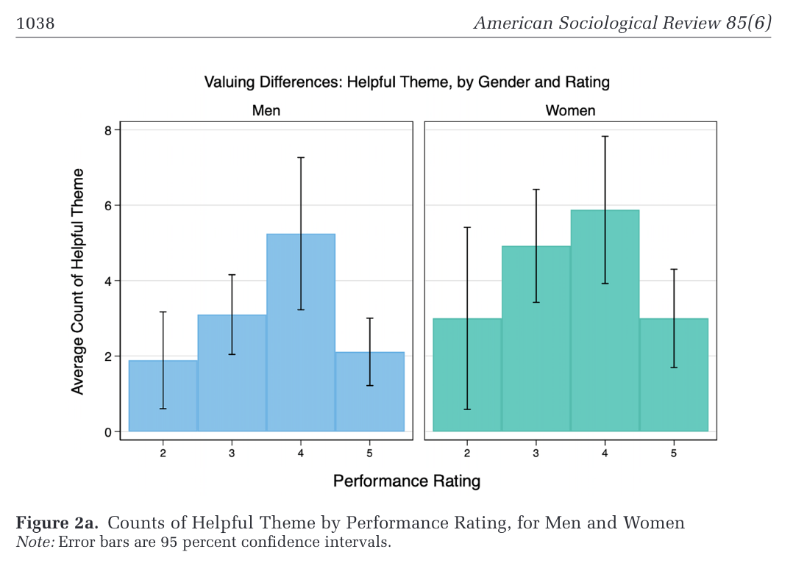
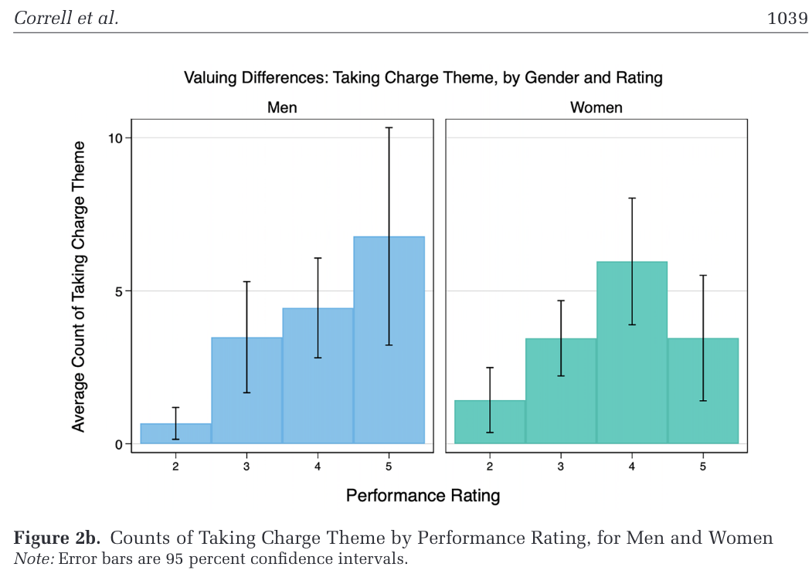
¿Por qué esto evidencia una lógica generizada?
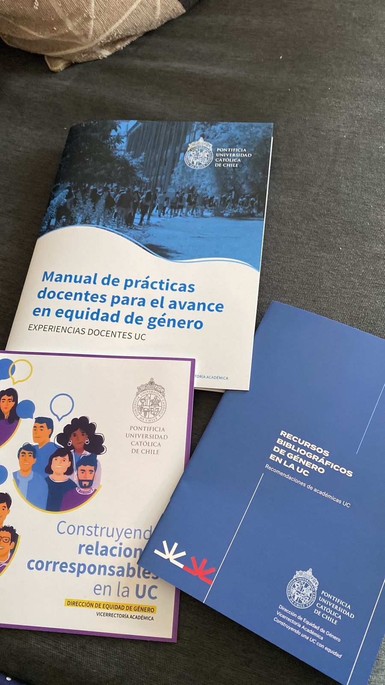
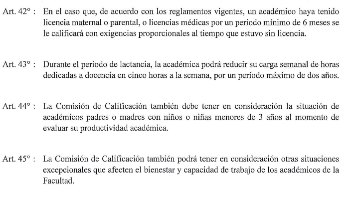
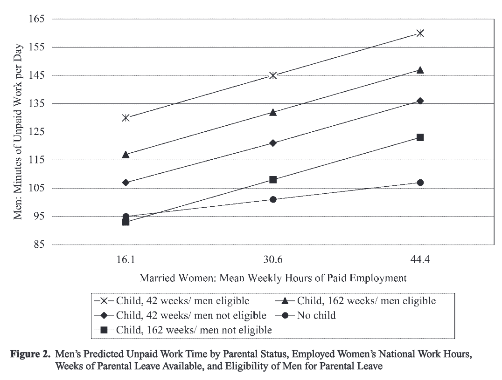
Predicción del tiempo de trabajo no remunerado de los hombres, según horas de empleo de las mujeres casadas, semanas de licencia parental y elegibilidad de los hombres para usarla (Hook 2006)
En grupos de 3 personas, empiecen a conversar sobre el tema de su proyecto final. Cada quien propone 1-2 ideas y las evalúan juntes según:
Usen la guía impresa para registrar sus ideas y la decisión final.
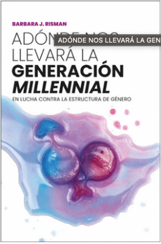
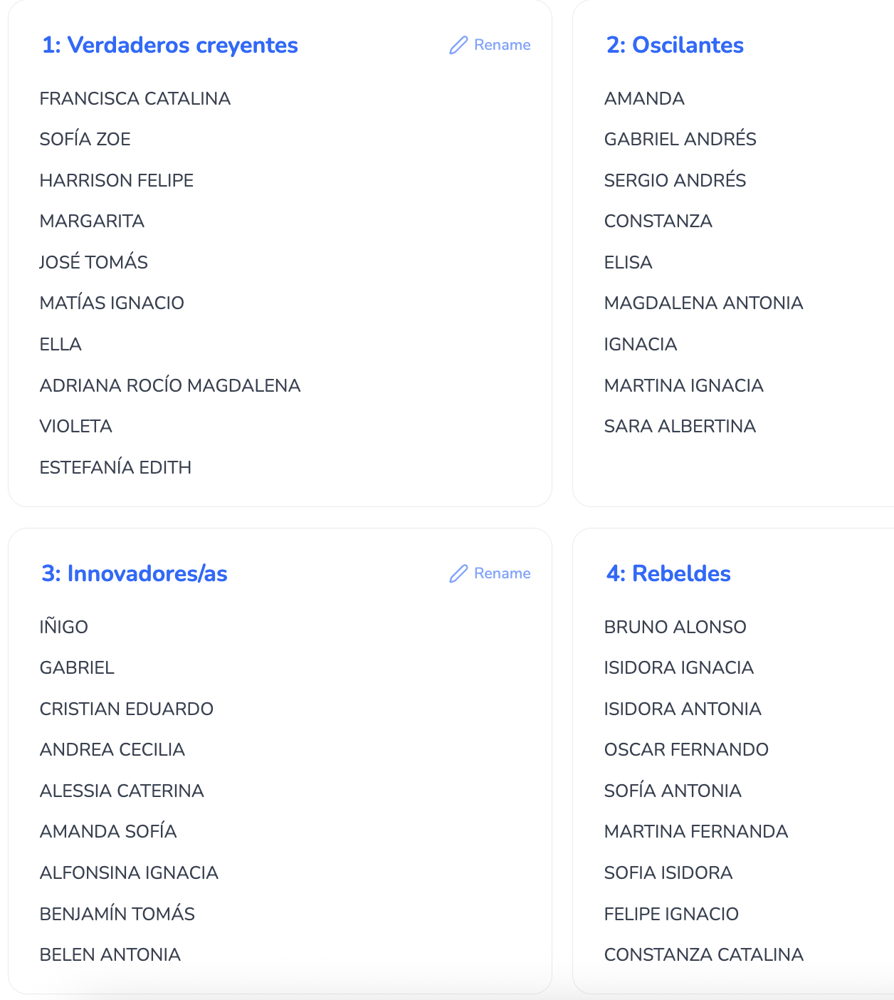
Asignación de capítulos a leer
SOL191 Sociología del Género · Clase 5